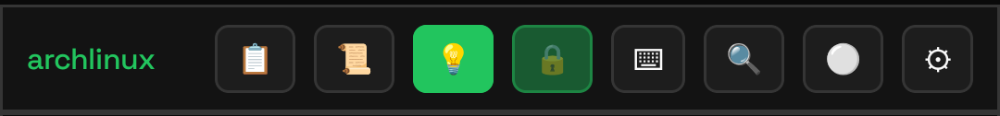
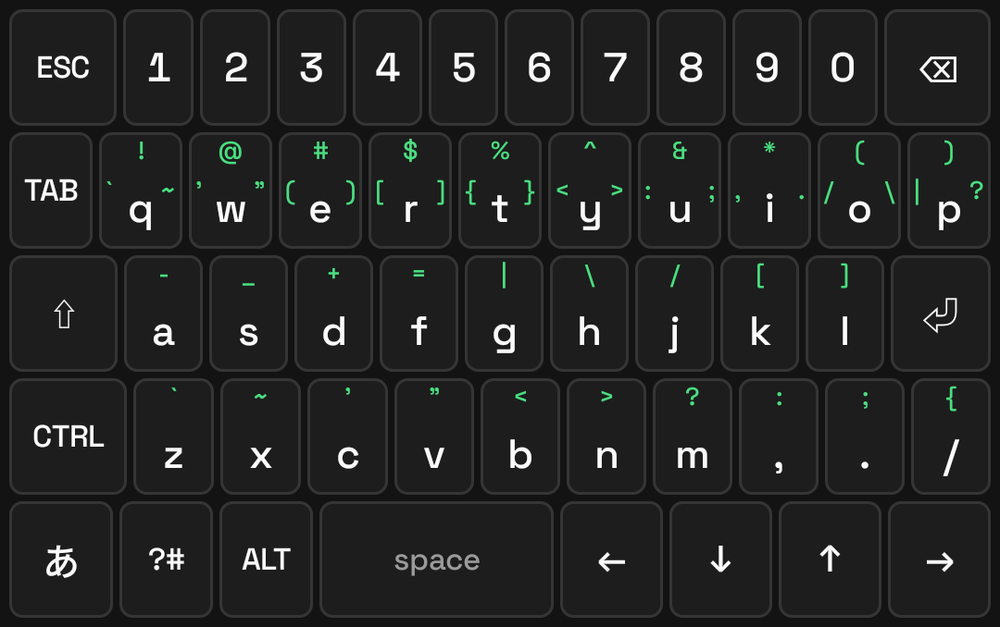
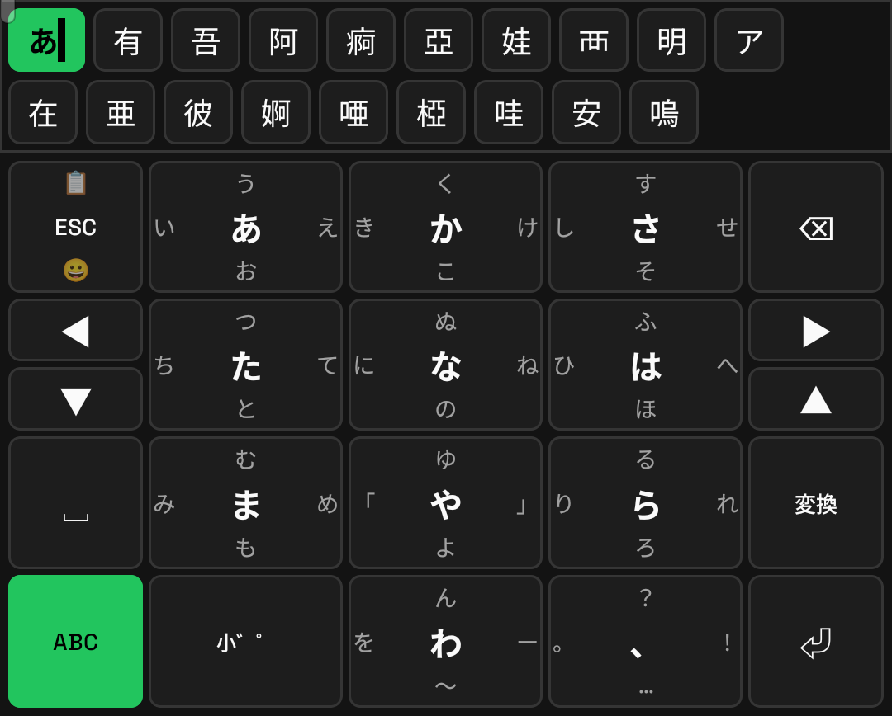
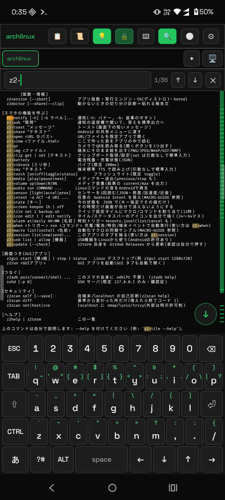

使いこなしガイド / 1. ターミナルとして使う
1. ターミナルとして使う
まずはふつうのターミナルとして動かせるところまで。 ここだけ読めば、スマホの中の Linux でコマンドを打って作業できます。
画面の見かた

- ツールバー（いちばん上）… 貼り付け・履歴・常駐・検索などのボタン。⚙ は必ず右端です。
- タブ… 端末をいくつも開けます。
+で追加、🖥 は GUI デスクトップのタブです。 - 端末… 文字が出るところ。ピンチで文字サイズを変えられます。
- キーボード… アプリ内蔵のもの。境目のバーをタップで開閉します。
ツールバーのボタン

| ボタン | はたらき |
|---|---|
| 📋 | クリップボードを貼り付け。ダブルタップでコピー履歴から選べます |
| 📜 | いちばん使う入口。よく使うコマンド / 実行履歴 / SSH・SFTP / サーバー / 自動化 をタブで切り替え |
| 🔅 | 画面が自動で消えないようにする。ダブルタップでこのアプリだけ暗くするスライダー |
| 🔒 | バックグラウンド常駐（閉じても端末が動き続ける） |
| 🔍 | 画面の文字を検索。見つかった場所がスクロールバーに目盛りで出ます |
| ⌨ | スマホ標準のキーボード ⇄ アプリ内蔵キーボードの切り替え |
| 🔴 / ⚪ | 端末ログの記録（開始 / 停止）。ダブルタップで詳細設定 |
| ⚙ | 設定。常に右端で、消すことはできません |
キーボードの使いかた
Z2Term には専用のキーボードが入っています。記号と修飾キーを、端末で打ちやすい形に並べたものです。


英字のとき
- 下フリック = 大文字（
qを下にはらうとQ）。上・左右は記号です。 - ⇧ は 1 回で次の 1 文字、2 回でロック、3 回で解除。
- CTRL ALT のあとに文字で Ctrl+C などを送れます。 ALT は「次のキーの前に ESC を付ける」修飾なので、ALT+. で 直前のコマンドの最後の引数、ALT+b/f で単語移動が使えます。
- 長押しで連打（文字・数字・矢印・スペース・⏎・⌫）。
日本語のとき
- 左の「あ」で日本語フリックへ。タップ=あ / 左=い / 上=う / 右=え / 下=おです。
- 打っている間は上に候補バーが出ます。「変換」キーで先頭のかたまりを変換、 ⏎ か候補タップで確定。
- ◀ ▶ で変換する範囲を変えられます。長い文を打った直後は全体が対象なので、 ◀ で縮めると助詞やあとの語をかなのまま残せます。
- 薄緑のかたまりは文まるごとの変換。タップで一気に確定します。
- 使った言葉は覚えるので、次から予測に出ます。かたまりの分け方も学習します。
- 絵文字はスペースの上の 😀 キー、貼り付けは ESC キーを上にはらうと出ます。
内蔵キーボードは、他のアプリでも使えます。
⚙設定 →「キーボード・入力・言語」→「内蔵キーボードを他でも使う」で、OS の入力方法として
有効にできます（有効化と選択は Android の決まりでご自身の操作が必要です）。
コピー・貼り付け・検索
- コピー: 画面を長押ししてなぞって範囲選択 →「コピー」。指の上に拡大鏡が出ます。
- 貼り付け: ツールバーの 📋。ダブルタップで履歴から選べます。
- 検索: 🔍。↑↓ で前後へ。内蔵キーボードのまま日本語で検索できます。

ソフトを入れる
ディストロは ⚙設定 →「ディストロ」で選びます。あとはふつうの Linux と同じです。
# Alpine（初期状態） apk add git vim jq # Ubuntu / Kali apt update && apt install -y git vim jq # Arch pacman -Sy --noconfirm git vim jq
glibc が要るものは Arch を選んでください。
Alpine は musl なので、
claude（Claude Code）や一部の言語処理系のように
glibc 前提で配布されているバイナリは起動しません。
手順は ハンドブック §6.5 にあります。PC からつなぐ / ファイルを渡す
- PC から入る: 端末で
sshdを動かし、PC からssh -p 2222 root@<端末のIP>。 ⚙設定 →「SSH 接続ヘルパー」に、いまの IP とコマンドがそのまま出ます。 閉じても入れるようにしたいときは「常駐サーバー」に登録します（→ 4 章）。 - 他のアプリから渡す: 相手のアプリで「共有」→ Z2Term。文字はそのまま、
ファイルは
~/z2term-inbox/に入り、そのパスが入力行に入ります（入るだけで実行はされません）。 - SD カードや内部ストレージ: ⚙設定 →「ストレージアクセス」を許可すると
/sdcardが見えます。 - PC 不要の adb:
z2adbで自分の端末に adb でつなげます。
Linux の GUI を開く

z2gui でデスクトップ、z2run <アプリ> で単体起動タブの中に Linux のデスクトップ（Xvnc + openbox）が開きます。音も出ます。
使うアプリは端末側で入れてください（例: pacman -S firefox）。